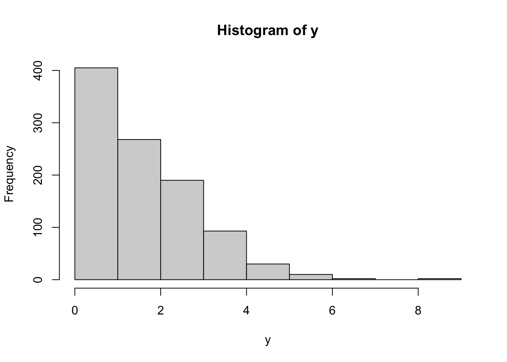
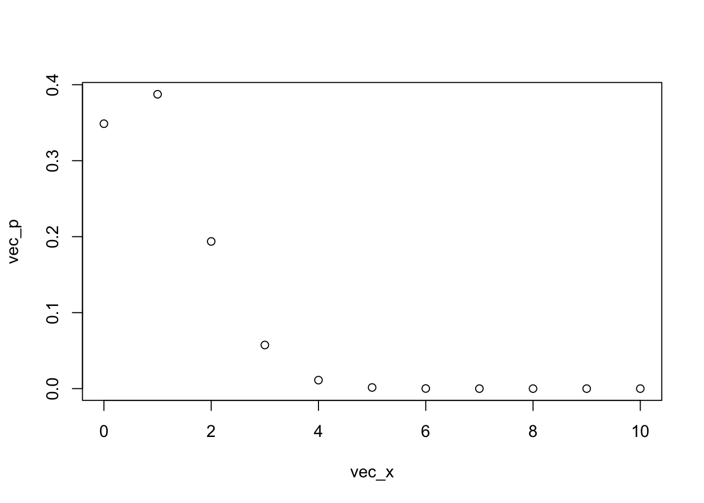
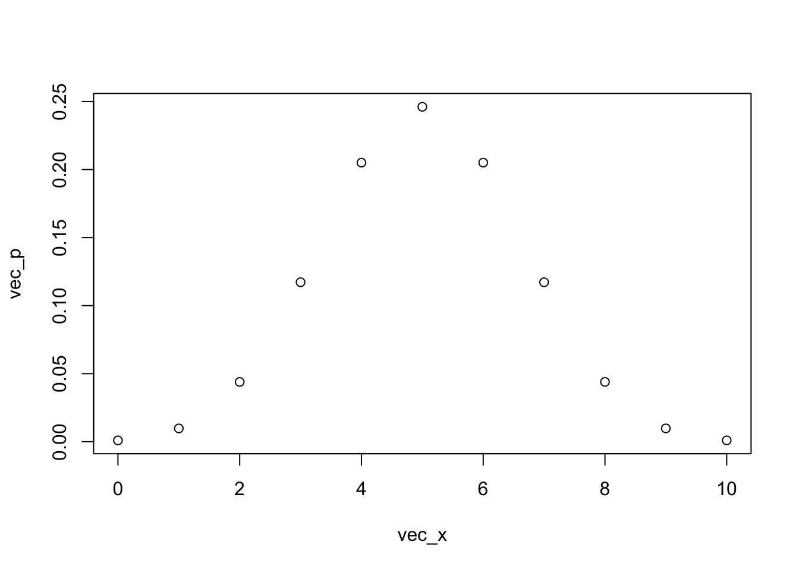
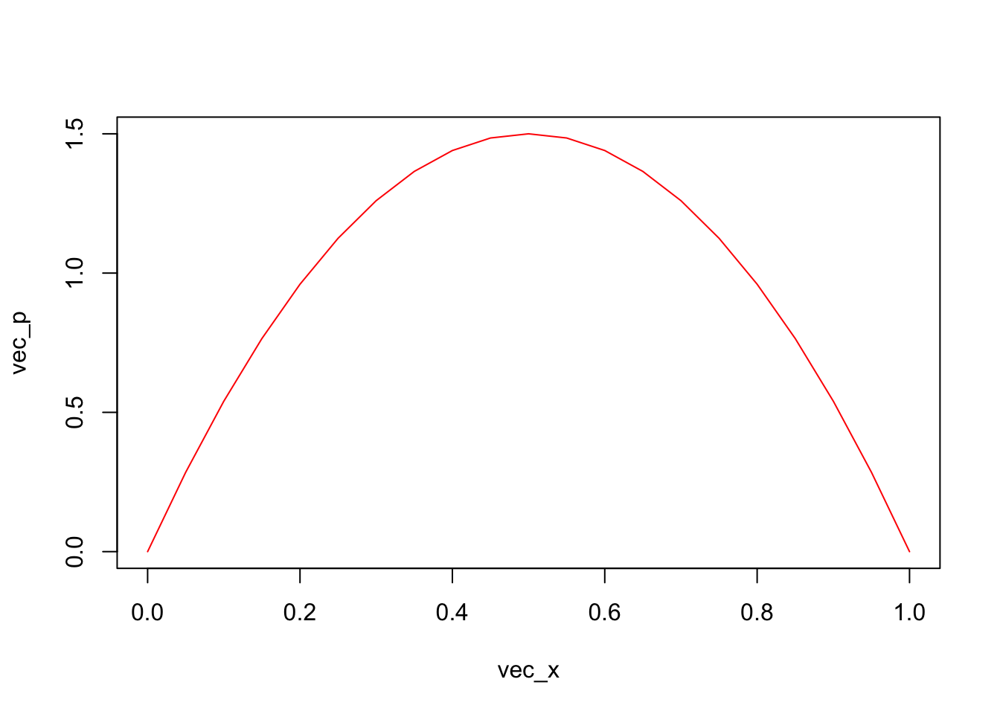
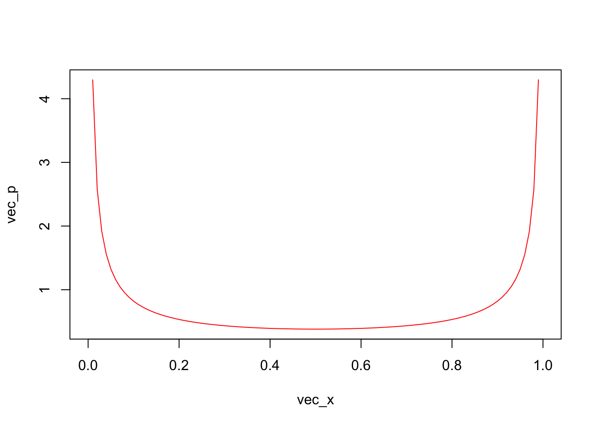
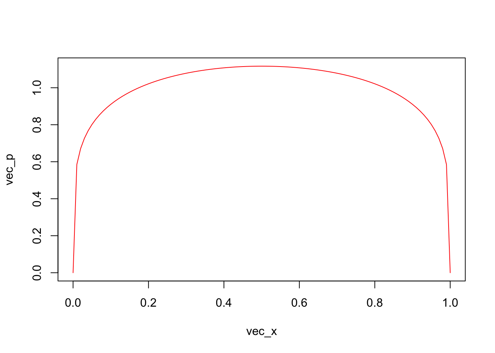

# Packages
library(tidyverse)
library(knitr)Probability distributions
1. Choosing Probability Distributions
Choose one or more appropriate distributions for the types of data shown below and justify your decision(s). 1pt. each
The number of seals on a haul-out beach in the gulf of Alaska. > Poisson
Presence or absence of an invasive species in forest patches. > Bernoulli
The absolute distance that seastar larvae will settle from the location of spawning (assume it cannot be exactly 0). > exponential
The number of abalone at time \(t\) surviving until time \(t + 1\). > Poisson
The proportion of reef sharks on a reef captured by a camera trap. > beta
The number of prey (from an initial number \(n\)) eaten by a predator during an experiment in aquaria. > binomial
The body length of a cohort of adult whale sharks. | > normal
2. Exploring Distributions & Parameters
- You’re modeling a population of gophers at Hopkins Marine Station, and you want to incorporate predation by the local red-shouldered hawk. On average, the hawk eats 2 gophers per month, but it doesn’t catch the same number of gophers each month. Choose a distribution from which to simulate monthly hawk predation (justify your answer). What values should you choose for this distribution’s parameter(s), and why? What is the probability that your simulated hawk will eat 4 gophers in a given month (you can eyeball this from the plot)? 3pt.
y <- rpois(n = 1000, lambda = 2)
range(y)[1] 0 8hist(y, breaks = c(0:max(y)))
dpois(4, lambda = 2)[1] 0.09022352- At each of 15 sites, you’ve set up 10 enclosures in which you’ve placed juvenile kelp (one individual per enclosure), and after checking on these cages 3 months later you’d like to fit a model which relates the number of juvenile kelp surviving at each site to temperature at each site. Why is a binomial distribution with \(n = 10\) the best choice for this data? Vary the other parameter (\(p\)), and observe what happens to the shape of the distribution. What is the most likely number of surviving kelp (per site) if the probability of survival \(p = 0.1\)? Choose a value of \(p\) for which the distribution’s shape is most symmetrical. 3pt.
vec_x <- seq(0, 10, by = 1)
vec_p <- dbinom(x = vec_x, size = 10, prob = 0.1)
plot(vec_x, vec_p)
# 1 individual is most likely to survive
vec_p <- dbinom(x = vec_x, size = 10, prob = 0.5)
plot(vec_x, vec_p)
You’re simulating a spatial model for which a proportion of the available habitat will be suitable (and the other proportion unsuitable) for abalone, and you’ve chosen a Beta distribution to do this. Choose three pairs of values for \(\alpha\) and \(\beta\) that give you three Beta distributions which are all symmetrical around 0.5 (so that, on average, your simulations will have about 50% suitable habitat), each with the following properties:
- One in which simulations with a suitable habitat of around 0.5 will be the most likely.
# ?beta
# E[X] = alpha / (alpha + beta)
# shape1 = alpha, shape2 = beta
vec_x <- seq(0, 1, by = 0.05)
vec_x [1] 0.00 0.05 0.10 0.15 0.20 0.25 0.30 0.35 0.40 0.45 0.50 0.55 0.60 0.65 0.70
[16] 0.75 0.80 0.85 0.90 0.95 1.00vec_p <- dbeta(vec_x, shape1 = 2, shape2 = 2)
plot(vec_x, vec_p, type = "l", col = "red")
- One in which some simulations will have lots of suitable habitat, and some will have very little suitable habitat, but few will have around 50% suitable habitat.vec_x <- seq(0, 1, by = 0.01)
vec_x [1] 0.00 0.01 0.02 0.03 0.04 0.05 0.06 0.07 0.08 0.09 0.10 0.11 0.12 0.13 0.14
[16] 0.15 0.16 0.17 0.18 0.19 0.20 0.21 0.22 0.23 0.24 0.25 0.26 0.27 0.28 0.29
[31] 0.30 0.31 0.32 0.33 0.34 0.35 0.36 0.37 0.38 0.39 0.40 0.41 0.42 0.43 0.44
[46] 0.45 0.46 0.47 0.48 0.49 0.50 0.51 0.52 0.53 0.54 0.55 0.56 0.57 0.58 0.59
[61] 0.60 0.61 0.62 0.63 0.64 0.65 0.66 0.67 0.68 0.69 0.70 0.71 0.72 0.73 0.74
[76] 0.75 0.76 0.77 0.78 0.79 0.80 0.81 0.82 0.83 0.84 0.85 0.86 0.87 0.88 0.89
[91] 0.90 0.91 0.92 0.93 0.94 0.95 0.96 0.97 0.98 0.99 1.00vec_p <- dbeta(vec_x, shape1 = 1/4, shape2 = 1/4)
plot(vec_x, vec_p, type = "l", col = "red")
- One in which all possible percentages of suitable habitat are about equally likely, except for the extreme values.vec_x <- seq(0, 1, by = 0.01)
vec_x [1] 0.00 0.01 0.02 0.03 0.04 0.05 0.06 0.07 0.08 0.09 0.10 0.11 0.12 0.13 0.14
[16] 0.15 0.16 0.17 0.18 0.19 0.20 0.21 0.22 0.23 0.24 0.25 0.26 0.27 0.28 0.29
[31] 0.30 0.31 0.32 0.33 0.34 0.35 0.36 0.37 0.38 0.39 0.40 0.41 0.42 0.43 0.44
[46] 0.45 0.46 0.47 0.48 0.49 0.50 0.51 0.52 0.53 0.54 0.55 0.56 0.57 0.58 0.59
[61] 0.60 0.61 0.62 0.63 0.64 0.65 0.66 0.67 0.68 0.69 0.70 0.71 0.72 0.73 0.74
[76] 0.75 0.76 0.77 0.78 0.79 0.80 0.81 0.82 0.83 0.84 0.85 0.86 0.87 0.88 0.89
[91] 0.90 0.91 0.92 0.93 0.94 0.95 0.96 0.97 0.98 0.99 1.00vec_p <- dbeta(vec_x, shape1 = 1.2, shape2 = 1.2)
plot(vec_x, vec_p, type = "l", col = "red")
Taking a look at the equation for the mean of the Beta distribution will probably make this pretty straightforward. What are the parameter combinations that you chose? Take a screenshot of these distributions (or draw them) and include them in your answers. **3pt.**3. Using R’s distribution functions
Answer these questions using the R console (if you’re running the distribution dashboard locally, you’ll have to close it to do so). Provide your code for all answers. 1pt. each
Find the mean, variance, and 95% quantiles (i.e., 2.5% and 97.5% quantiles) of 1000 random draws from a Poisson distribution with \(\lambda=33\).
What is the probability \(P(X \leq 6)\) that a random draw from a Poisson distribution with \(\lambda = 4\) will be less than or equal to 6?
What is the probability \(P(X = 3)\) of obtaining a value of 3 from a Binomial distribution with \(p = 0.3\) and \(n = 5\)?
What is the probability \(P(-1.5 \leq X \leq 1.5)\) that a value drawn from a standard normal distribution will be between -1.5 and 1.5 (it may help to approach this visually)?
Find the value \(x\) that satisfies to \(P(X \leq x) = 0.8\), if \(X\) is a Gamma random variable with \(k =2\) and \(\theta = 1\).
# a
lambda <- 33; n <- 10000
y <- rpois(n, lambda)
mean(y); var(y); quantile (y, c(0.025, 0.975))[1] 33.0503[1] 33.40911 2.5% 97.5%
22 45 # b
ppois(q = 6, lambda = 4, lower.tail = TRUE)[1] 0.889326# c
dbinom(x = 3, size = 5, prob = 0.3)[1] 0.1323# d
pnorm(q = 1.5) - pnorm(q = -1.5)[1] 0.8663856# e
# shape = k, scale = theta
qgamma(p = 0.8, shape = 2, scale = 1)[1] 2.9943084. Samples and their means
Read the intro text below the Normal distribution in the distribution dashboard. What is the difference between the distribution of the sample and the “sampling distribution?” How is the sample size distinguished from the number of samples? 2pt.
Drag the sliders for the sample size and the number of samples all the way to the right. Visit all of the distributions and spend a little time there, messing with their parameters. In general, what do you notice about the distribution of their sample means? Are there any distributions (/parameter values) for which this pattern does not hold? If so, what seems to be the reason? 3pt.
- sample size: # of replicates used to calculate the mean (or other statistic from the data) for a sample data set number of samples: the # of sampled datasets sampling distribution: a distribution of statistics calculated from a set of samples distribution of samples: the count of outcomes (freq distribution) for a (single) sample dataset
- Sampling distribution converges to normal for all distributions, except for pareto under certain parameter values. When the scale and shape parameters are less than ~, we start to see right-skewed sampling distributions.